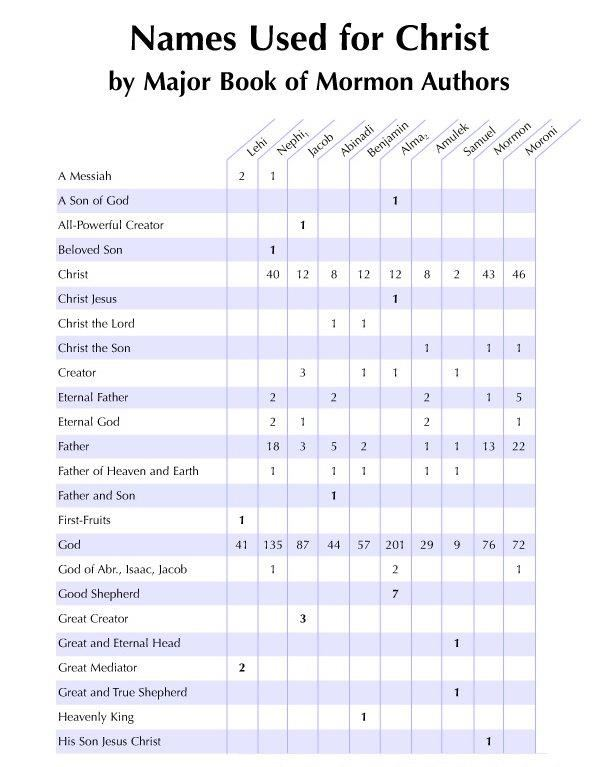
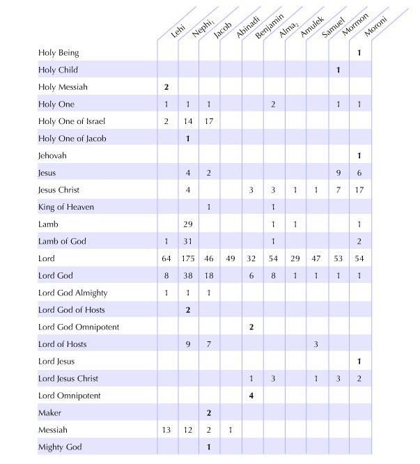
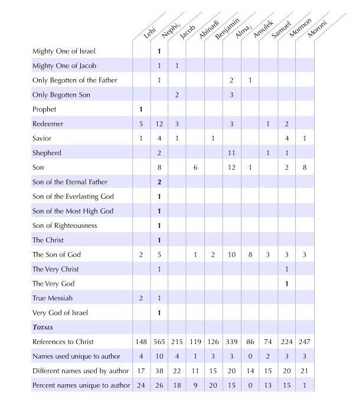

After quoting from Isaiah 2–14 (2 Nephi 12–24), Nephi provided five additional chapters of his own interpretation of Isaiah. Rather than being a strict commentary, it is more of a Midrash—an explanation of what he saw in those chapters that he wanted his people, and us, to understand. It was not enough for his people to know what Isaiah said on the brass plates; Nephi wanted his people to understand what it meant.
That tells us something more about Nephi, doesn’t it? He was a teacher. He was meticulous about what he did. He was very careful. He understood what Isaiah was saying. If you are patient with both Nephi and Isaiah, there is no better guide to take you through Isaiah than Nephi.
The Book of Isaiah is somewhat of a scrapbook of seemingly disconnected revelations, like the Doctrine and Covenants. Each little section is a separate prophecy. Isaiah did not sit down and write all of this in one sitting. We do not know when all the prophecies of Isaiah were put together and collected. The old Jewish tradition is that they were collected in the days of King Hezekiah and finally put into one collection then, but we do not know how decisions were made for selecting the order of the Isaiah writings.
Nephi claimed that we really would not understand Isaiah unless we had lived in Jerusalem in his day and understood the manner of speech, the usage of the language, the culture, and the places. He said, “For behold, Isaiah spake many things which were hard for many of my people to understand; for they know not concerning the manner of prophesying among the Jews.” Nephi had lived there, he knew Jerusalem.
These Isaiah chapters are difficult for anyone to understand, but for the Book of Mormon to give us such brilliant and insightful commentary on these very difficult chapters is a most useful element of the book and a great testimony of the Book of Mormon itself.
Nephi said that his soul “delighted in plainness.” Do you think Christ likes plainness?
What is important about plainness? When Christ said “Judge not that ye be not judged,” it was a very plain saying. Of course, you can judge all you want, but you had better be sure that you are judging righteously, because whatever standard of judgment you use, that will be used to judge you. Be wise about it. That is a plain statement. So is, “Do unto others as you would have them do unto you.” Very plain. I think as we look at the words of Jesus, we see that plainness is a great virtue. Sometimes we over-value sophistication and complexity.
After Nephi had quoted the Isaiah passages, he started going through the four main elements in his prophetic world-view. In verse 12, Nephi talked about how Christ would come and how Jesus would manifest himself to the people in Jerusalem but they would reject and crucify him. Nephi included new information here that had not been mentioned before in the Nephite record, specifically he prophesied that after Jesus was laid in a sepulcher for the space of three days, he would rise from the dead. In 1 Nephi 19, Zenos had been quoted as saying there would be three days of darkness, but it did not mention what was going on during those three days of darkness. Here we learn that there would be a three-day period in which Jesus would be in the tomb.
There is a corollary between the three days of darkness surrounding the death of Jesus and a prior significant experience in Israelite history. Under the Law of Moses, the Israelites celebrated the Passover as a reminder of God’s hand in saving them from death, redeeming them from slavery, and bringing them safely out of Egypt. Moses had cursed the land of Egypt and prophesied that the firstborn of the Egyptians would die by the hand of the destroying angel. However, the destroying angel would pass over those Israelites who followed his specific instructions to paint their doorposts with the blood of a male lamb without blemish. Three days of darkness and death prevailed in Egypt. This was a foreshadowing of the three nights and days of darkness when Jesus would be crucified, would die, and would lie in the tomb. Significantly, the destruction among the inhabitants of the New World particularly afflicted the wicked, while those who were “more righteous” were “spared” (3 Nephi 9:13).
Moreover, in 2 Nephi 25:16, Nephi quotes Psalm 24:4 in order to worship God “with clean hands and a pure heart.” This was the basic temple entrance requirement in the Temple of Jerusalem and, apparently, also in the Temple of Nephi.
Notice that Nephi needed to say that his people should not look for another Messiah to come. There would be no other Messiah, “for there is save one Messiah spoken of by the prophets, and that Messiah is he who should be rejected of the Jews.” Nephi must have been aware that some people wondered how many Messiahs there would be. What made them wonder?
The word mashiach in Hebrew means “anointed” or “anointed one.” In ancient times, a high priest was anointed to be the high priest. So, in a way, every high priest under the Law of Moses was a “mashiach”—a messiah. In 1 Nephi 10:5, Lehi said that a messiah would come.
He did not say the Messiah, so Nephi may have wanted to clarify this matter.
There are reasons why we have multiple anointed people, but that does not make them all the Messiah. The name “Mosiah” is actually related to the same word. “Messiah” was a word that was used in more than one way, but Nephi wanted us to know that there is only one Messiah—he who would perform the atonement and would be the one whom we worship through his holy name. As Nephi taught in verse 13: “for I have seen his day, and my heart doth magnify his holy name.”
Nephi not only made it very clear that there would be only one Messiah, he also revealed the name of the Messiah—“Jesus Christ, the Son of God”—and even gave a timeframe when this one Messiah would be born. Nephi did not pin the date down precisely, but he did say that it would be “six hundred years from the time that [Lehi and his family] left Jerusalem.” In other words, Christ’s birth would be close enough to 600 years that people would have recognized that Jesus was the Messiah, and would have been convinced that there was no need to look for another.
Again, Nephi referred to the Israelite ancestors of the Nephite people: “And as the Lord God liveth that brought Israel up out of the land of Egypt, … there is none other name given under heaven save it be this Jesus Christ, of which I have spoken, whereby man can be saved.” This is another Passover metaphor.
Nephi continued: “[T]he Lord God . . . gave unto Moses power that he should heal the nations [the tribes of Israel] after they had been bitten by poisonous serpents, if they would cast their eyes unto the serpent which he did raise up before them.” The serpent, especially a serpent raised on a pole, is a symbol of Christ, and it refers to when Moses put the brazen serpent on the pole so that anyone who looked at it would be healed.
Jesus used that reference in John 3:14: “[E]ven so must the Son of man be lifted up” just as the healing serpent had been lifted up on the post by Moses.
Nephi also referred back to the time in the wilderness that the Lord “gave [Moses] power that he should smite the rock and the water should come forth.” Once again, this is a type and symbol of Christ. In 1 Corinthians 10:4, Paul pointed to this same event in Israelite history and explained “that Rock was Christ” and the spiritual water would come forth from him. All these things had been revealed to Nephi, and he understood that these images typify Christ. The belief that the Law of Moses and its related events were given to represent what would happen in the life of the Savior is a tradition that goes way, way back in Judeo-Christian thought.
It seems that Nephi, and many of the ancient prophets, had a well-developed and sophisticated understanding of the mission of Christ, of his life, and also of his name. In the ancient world, the people greatly appreciated the importance of what we call “name theology.” We do not have quite the same appreciation today. They had to know the name of the god that they were worshipping, and the name was usually very holy, kept sacred, and only spoken under certain conditions.
In verse 19, Nephi knew and used the Savior’s full name, Jesus Christ. Often, the Savior was referred to as the Only Begotten of the Father, the Father of Heaven and Earth, and the Son of God. There are a number of ways in which Nephi described the Messiah who was to come (see Figure 2). Possibly, the understanding of the Messiah’s name was something that came gradually and Nephi, Jacob, and all the subsequent Nephite prophets from this point forward knew him by his name, Jesus Christ.
Nephi had deep respect for and interest in the name of God. I am sure he emphasized this. So, when Nephi taught that “we talk of Christ, we rejoice in Christ, we preach of Christ, we prophesy of Christ, and we write according to our prophecies, that our children may know,” this would have been a very solemn, spiritual, and holy teaching of his time.
Nephi explained his purpose and focus in life: “For we labor diligently to write, to persuade our children, and also our brethren, to believe in Christ, and to be reconciled to God.”

Figure 2 Welch, John W., and Greg Welch. Names Used for Christ by Major Book of Mormon Authors. Provo, UT: Foundation for Ancient Research and Mormon Studies, 1999, chart 44. Continued on pages 200–201.


What does it mean to “be reconciled” to God? “Reconciled ” is not a very complicated word, but what does it mean “to be” reconciled ? It could mean to be at peace with God and, when we are at peace with God, we follow his commandments and love Him. More than anything, “to be reconciled” is to follow the first great commandment, to love God.
When you are reconciled to him, when you love him, everything else will follow.
What does “after all we can do” mean? How many ways can that phrase be understood?
In the 1960s and 1970s, the German translation of this verse in the Book of Mormon read, “in spite of all we can do,” we are saved by grace. That translation has since been changed. The translation now says, “after all that we can do.” This verse was probably changed to avoid a common misconception among some churches that our works will not matter—we can do whatever we want—as long as we accept the Savior.
As mentioned in the Notes for the previous Come Follow Me lesson, Jacob also said something similar in 2 Nephi 10:24, “Reconcile yourselves to the will of God, . . . and remember, after ye are reconciled unto God, that it is only in and through the grace of God that ye are saved.” Nephi seems to be paraphrasing and simplifying Jacob’s statement to make it plain. But Nephi most likely understood the doctrine of salvation by grace the same way that Jacob expressed it. “After all that we can do” would thus involve all that it takes for us to “reconcile [ourselves] to the will of God” and to be “reconciled unto God,” as Jacob said, and as Nephi hopes to persuade all “to be reconciled to God” (25:23).
After that, it is not only “by grace” that we are saved, but also, as Jacob said, “in and through the grace of God” that we are saved. “By” seems to express the instrumental effect of God’s grace upon us. “In” would seem to express the interpersonal relationship with God and Christ in which the binding aspects of grace thrive. “Through” grace may inspire a sense of the enduring power of grace that persists through time and throughout all eternity.
Alma 24:11 also correlates well with 2 Nephi 25:23, which is imbedded in the Book of Mormon narrative of the Ammonites, who buried their weapons of war. Regarding their hope of being cleansed from their past wicked, murderous and sinful behavior, they stated: [I]t has been all that we could do, (as we were the most lost of all mankind) to repent of all our sins and the many murders which we have committed, and to get God to take them away from our hearts, for it was all we could do to repent sufficiently before God that he would take away our stain.”
In other words, all we can do is turn to Christ and he will be there for us. What was all the Ammonites could do? They buried their weapons, they made a covenant, and they kept it. They refused to fight, even when they were attacked. They offered up their lives rather than fighting. Talk about enduring to the end! This was a deliberate calculation made by the Ammonites. Individually, in their own hearts, they knew and believed that they would be saved and redeemed from all of their problems, but after all they could do. And that turned out to be quite a lot for some of them. So, in our own trials we can look to this scripture as a beacon of hope. We will be free from our sorrows, regrets, burdens and trials after all we can do to turn to God in the midst of that trial.
Even though we have work to do, we are still saved by grace. The interpretive proof of our reliance on grace is found in these two verses: 2 Nephi 25:23–24. Verse 23 ends with the statement that “we are saved [by grace], after all we can do.” This is followed with verse 24, which begins with “notwithstanding [even though we are saved by grace] we believe in Christ, we keep the law of Moses, and look forward with steadfastness unto Christ, until the law shall be fulfilled.” All of us, every one of us, must rely on grace— the Atonement, the Resurrection, and the sustaining influence of Jesus Christ—in order to be made perfect. Then, through our faith we are made alive in Christ because we are willing to do what he has commanded. We still keep the commandments—that is part of all we can do.
Elder Dallin H. Oaks referenced 2 Nephi 25:23 and the principle of grace, when he made the following comment in his April 1998 General Conference address entitled, “Have You Been Saved”: Some Christians accuse Latter-day Saints … of denying the grace of God through claiming they can earn their own salvation. We answer this accusation with the words of two Book of Mormon prophets. Nephi taught, “For we labor diligently … to persuade our children … to believe in Christ, and to be reconciled to God; for we know that it is by grace that we are saved, after all we can do.”
One of the footnotes in verse 23 points to D&C 138:4, which says, “That through his atonement, and by obedience to the principles of the gospel, mankind might be saved.”
This verse undoubtedly implies that we must also be obedient to ordinances as well as principles, because participating in ordinances are things that we have to do to be exalted. We should also look at being saved in the context of a covenant life.
These verses explain that grace is not simply the means by which we are saved—it is the principle that we live and the salvation that Christ brings. In other words, when we have been saved by grace, we live in grace. This also means that we live in love because grace is unconditional love, manifested through the giving of gifts.
The Greek word for “grace” does not describe a tangible gift you may receive. In the ancient world of Jesus and Paul, “grace” established a relationship because when you accept a gift from someone, you are then obliged, and you are then a part of a relationship with the person who gave the gift. I have a friend who is writing a book entitled, “His Obliging Grace.” It is “amazing grace,” but it is also “obliging grace” because we are obliged and welcome to live in that relationship.
It is important to understand that because of our faith, we become alive in Christ. Jesus submits his will to the Father and, therefore, if we want to be Christ-like, we must also submit our will to the commandments of God. There is a Christ-like echo in our recognition of this principle.
Nephi was well aware that Jesus would come down—the condescension of God—and that he would suffer and die. We take our knowledge of Christ’s ministry on earth for granted because we have hindsight. We know what happened. He lived, he died, and he was resurrected. But Nephi was living before all of this occurred.
Nephi knew that Christ was going to suffer much throughout his life. Nephi understood suffering. He had a difficult life—leaving the comforts of his childhood home in Jerusalem, facing exposure in the wilderness and the risk at sea. Nephi knew that Christ was willing to endure extreme pain and suffering for all mankind because of love. I think Nephi probably took great comfort in the fact that he was being Christ-like as he suffered and endured to the end.
When Christ appeared to the Nephites in 3 Nephi 27:27, he stated, “What manner of men ought ye to be? Verily I say unto you, even as I am.” There is no principle of ethics or morals that is stronger than following the best example that you can find. Christ showed us, by example, how to best live our life. Following him will make it a reality that we can become Christ-like.
Nephi served in a lot of different positions, as we all do. He was a prophet, he was a builder, he was a record-keeper, he was a king, and he was a leader. Nephi was also a father. We know he had plenty of children. How many prophets in the scriptures tell you what they taught their children? We learn two things about Nephi from this scripture. First, it was important to Nephi to mention his children. Second, teaching his children about Christ was a priority for Nephi. He put his children on the top of his list of things that are most important.
Nephi was a record-keeper. He was also a record-maker. This task was very important in Nephi’s life. It was extremely difficult to make and keep records on sheets of metal. It involved a lot of time, work, expense, and training. Intense focus was necessary—there were no erasers in that medium.
Nephi had left the Holy Land behind, but had brought the brass plates with him. The plates were, in a way, his connection back to the holiness, the tradition, and the prophets. Nephi was the custodian of all of that! No wonder Nephi felt a strong desire to make sure that these things would come forth at a later time. Nephi labored to teach his children. He also labored to teach them through the records that he kept. The scriptures were obviously very important to Nephi. Talk about the price he had to pay in terms of obedience!
Nephi was also a careful and artistic writer, as is evident in the chiastic structure he composed in 2 Nephi 25:24–27. Through that inverted parallel arrangement, Nephi focused all attention on Christ at the center of his most famous personal statement of purpose. See Book of Mormon Central, “What Can We Learn from 10 of the Best Chiasms in the Book of Mormon? Part 1 (2 Nephi 25:26),” KnoWhy 349 (August 7, 2017); “Why Is the Book of Mormon So Focused on Jesus Christ? (2 Nephi 25:26),” KnoWhy 484 (November 13, 2018).
The Nephites were taught by Nephi that “ye must bow down before him, and worship him with all your might, mind, and strength, and your whole soul.” Where did Nephi’s people worship? In the temple! Soon after Nephi and his people settled in the land they eventually called “Nephi,” they built a temple.
Because Nephi’s people were still living the Law of Moses, they needed a temple to obey many parts of that law. He instructed his people: “[I]nasmuch as it shall be expedient, ye must keep the performances and ordinances of God until the law shall be fulfilled which was given unto Moses” (25:30). Among other things, the Law of Moses was the Law of Sacrifice. Nephi’s temple had an altar. The people offered appropriate sacrifices on certain days, as specified under the law. They would have also observed certain festival days such as the Day of Atonement or the Feast of Tabernacles, which were connected particularly with particular sacrifices and solemn observances.
However, Nephi was well aware and knew that all ordinances and covenants under the Law of Moses pointed to the coming of Christ. Nephi preached of Christ and also the importance of fulfilling the requirements under the Law of Moses. The word “expedient” in verse 30 probably means “appropriate” or “necessary.” Nephi was explaining to his people that it was still necessary for his people to perform the ordinances under the law of Moses because that law had not been fulfilled. He also understood that, with the coming of Christ, the performances and ordinances under the Law of Moses would be fulfilled.